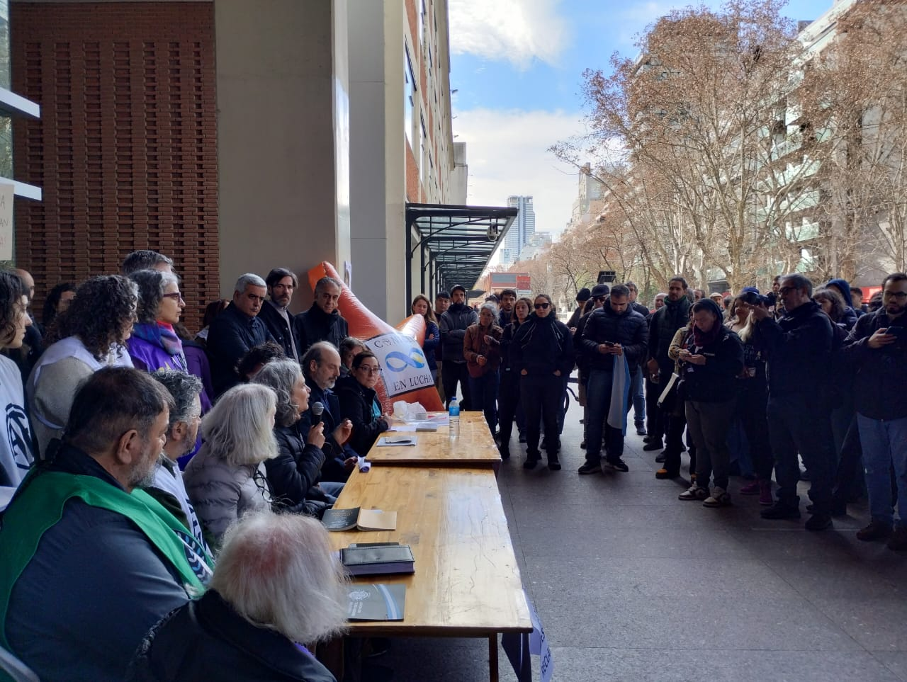
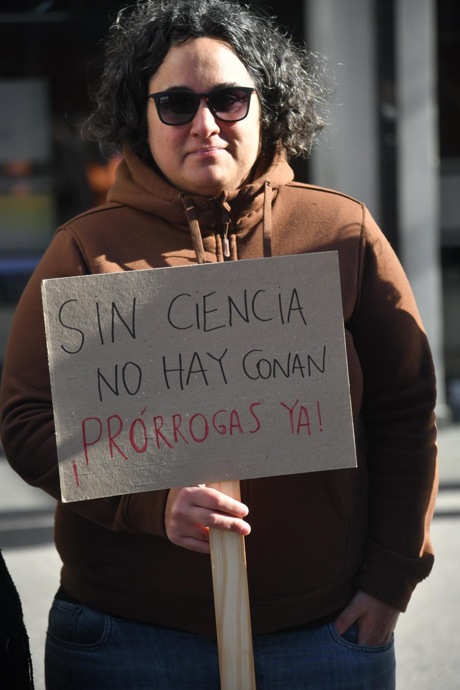
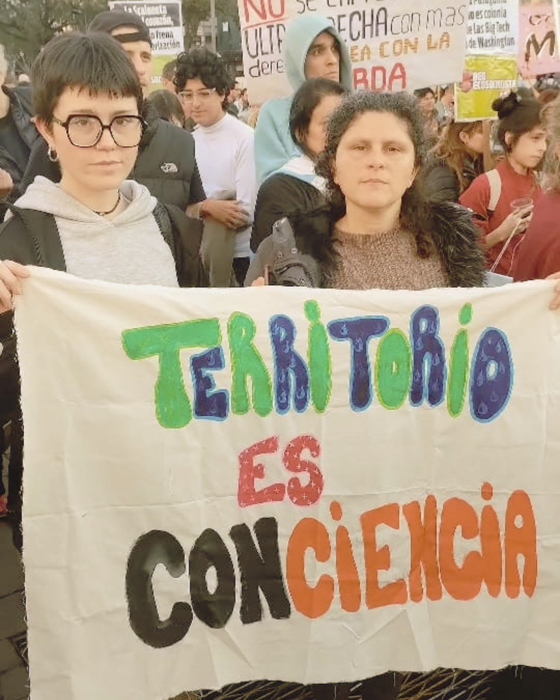
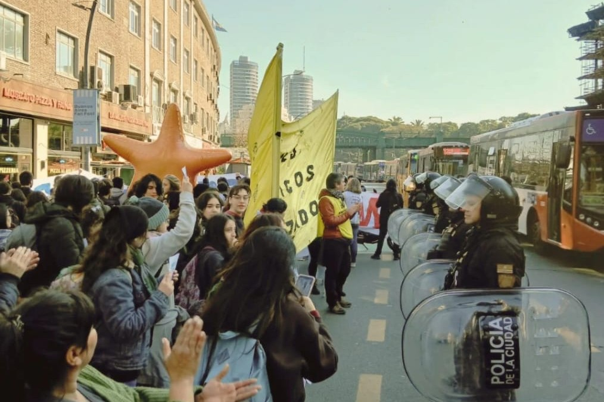

Yo no soy lo que este gobierno quiere hacer de mí. Me rehúso a aceptar imperturbable el ostracismo al que pretende arrojarme. Acostumbrada a tener que adornar de tecnicismos mi lenguaje para contentar a cierto sistema académico, hoy me despojo de la pretensión y escribo a corazón abierto: no pienso dejar que este gobierno me falte el respeto, y antes de que me corran diré mis verdades.
Hoy, viernes 31 de julio, es mi último día como Becaria Posdoctoral del CONICET. Esta noche, cuando el reloj marque las 00, seré una desempleada más, otro nombre que se suma a la interminable lista de personas que día tras día se quedan en la calle en este glorioso país.

¿Cómo estás? Me preguntan, y mi respuesta busca siempre las mismas tres palabras: siento mucha angustia, tristeza y bronca. Este carnaval de sensaciones emerge como un volcán en erupción, en un contexto que de por sí ya es complicado. Mi angustia no solo se debe a quedarme sin el sustento diario, sin el dinero que necesito para sobrellevar la vida cotidiana. Mi angustia tiene que ver también con otras cosas, pues rápidamente se convierte en tristeza. Y de repente me encuentro llorando sola en mi casa, sentada frente a la computadora, tratando de escribir un nuevo artículo, pero las palabras no fluyen. Y no es que no sepa qué escribir, tengo mucho sobre lo que trabajar y comunicar. Sucede que, mientras me seco las lágrimas y golpeo el escritorio con el puño derecho lleno de impotencia, de repente me invade un insoportable sentimiento de bronca. Angustia, tristeza y bronca me da saber que por decisión de este gobierno me quedo sin carrera, me quedo sin proyecto de vida, me quedo sin una parte de mi identidad. Fueron más de ocho años invertidos en estudios y perfeccionamiento constante, superando un sin fin de evaluaciones, para que hoy, por decisión política, yo no sepa qué hacer con mi vida.
Claro que reconozco y me hago cargo de mis privilegios de clase. ¿Por qué no habría yo de quedarme sin trabajo? ¿Qué me hace tan especial e in-merecedora del inminente despido? Pues claro que nada. Aquí en todo caso vale más preguntarse, si esto me pasa a mí con tanto curriculum adornado, que queda para quienes no tuvieron la misma posibilidad de invertir tiempo y plata en estudiar y capacitarse. Y de nuevo la misma respuesta: la calle. Porque este gobierno no crea puestos de trabajo, crea desempleo. Tanto que nos mandan a todos a trabajar de uber, en cualquier momento no vamos a tener a quien llevar, porque todos estaremos ofreciendo el servicio o porque no tendremos cómo pagarlo.

El Consejo Nacional de Investigaciones Científicas y Técnicas (CONICET) atraviesa una situación crítica que cada día se profundiza más sobre quienes trabajamos en el organismo. Hoy en Argentina 379 personas altamente calificadas nos quedamos en la calle. Esta situación refleja una crisis sin precedentes en el sector. El sistema científico argentino perdió casi 8 puestos de trabajo por día desde diciembre de 2023. La situación crítica excede a un simple proceso de desfinanciamiento como otros ocurridos a lo largo de su historia: se trata de un CIENTIFICIDIO.
Hay muchos compañeros, compañeras y colegas que siempre supieron que querían hacer esto con su vida. Con mucho esfuerzo se prepararon y lo consiguieron. Ese no fue mi caso. De chica jamás imagine ser científica. No era mi sueño. Creo que porque no sabía que podía. Mis papas no tienen estudios de grado y en Villa Urquiza, mi barrio en la capital tucumana, era habitual que mis amiguitos no terminaran el secundario. Pero yo si tuve todas las posibilidades que a ellos les faltaron, para acceder a la educación que, con el paso del tiempo, me permitiera elegir qué carrera seguir y qué proyecto de vida construir. Y he ahí mis privilegios: posibilidades, elegir, construir. Y así fue como, después de muchos años de trabajar de panfletera (si se me permite el término), secretaria, administrativa, encargada, redactora, periodista, tallerista, audiovisualista, técnica territorial, me animé a postularme a una beca doctoral Conicet. Quien iba a decir, allá por el 2017, en pleno gobierno de Macri, que yo podía ganar ese concurso. Pues lo hice, y a partir de ahí comencé a creérmela un poco más. Cuando me gané la beca, también gané más seguridad. Cuando gané la beca, sentí que también gané dignidad, para mí y para mi familia. Ellos mucho no entendían de qué se trataba, pero entre lágrimas me felicitaban, porque sabían que era algo muy importante. La anécdota divertida es que mi mamá confundía Conicet con Unicef, porque al pronunciarlo sonaban bastante parecido, y así todos en el barrio creían que su hija trabajaría en esa organización.

Mi mamá trabajó mucho por mis tres hermanos y por mí. Debió someterse a los lugares minúsculos y despreciables que el sistema patriarcal le dejó habitar por ser mujer. Trabajó mucho desde chica, y de grande siguió trabajando al cuidado de su familia y de su hogar. Mi papá, un héroe veterano de Malvinas, le dedicó su vida a esa guerra infame, por aquel entonces combatiendo en las islas, y después por siempre en los recuerdos tortuosos que lo acompañan hasta hoy. Por eso, cada título mío es también de ellos. Por eso las lágrimas de mi mamá en la defensa de mi tesis doctoral. Por eso mi orgullo es de ellos, porque yo pude hacer lo que ellos no pudieron. Y por eso para mí quedarme hoy en la calle significa, en algún punto, fallarles. Significa perder parte del triunfo conquistado en familia. Significa perder parte de mi identidad. Significa un poco perderme.
Y cuando pensé que me perdía, me encontré con otros y me encontré en otros. En todo este proceso de quedarme en la calle y salir a buscar trabajo siempre estuve acompañada de mis compañeros y compañeras de instituto, de mis amigos y amigas, de mi familia. Pero, además, encontré compañeros de lucha. Hace meses que en Buenos Aires le vienen poniendo el cuerpo, y que en Tucumán y otros puntos del país acompañamos a la distancia como podemos. Hace meses que cientos de becarios e investigadores sostenemos una lucha activa en defensa de nuestros derechos laborales y en defensa del sistema científico. Porque el CONICET no es de un presidente de turno, es de sus trabajadores.

A este gobierno no le importa la ciencia, mucho menos la que yo hago. “Ciencia innecesaria”, dicen. Yo prefiero llamarla ciencia humana. Mi trabajo aborda la vida cotidiana de las comunidades vulneradas, desfavorecidas, víctimas de la desigualdad, la fragmentación, la exclusión y la estigmatización. Mi trabajo, siempre junto a los vecinos y vecinas de esas comunidades, sirve para encontrar soluciones a sus problemas habitacionales y contribuir a mejorar las condiciones de vida. Mi trabajo apunta a que todos y todas podamos vivir dignamente, especialmente quienes más lo necesitan. Pero a este gobierno no le importa mi ciencia, como tampoco le importa la de mis colegas que buscan curar enfermedades o producir mejores alimentos. No le importa la ciencia porque, en el fondo, no le importa la vida ni el pueblo. Qué ciencia le puede importar, si todos los miércoles golpean salvajemente a los jubilados, qué ciencia le puede importar si suspendieron las obras públicas en todos los barrios populares donde los transas y la droga están haciendo estragos con la vida de los niños, los jóvenes y sus familias. Qué ciencia le puede importar si están masacrando la universidad pública. Qué ciencia le puede importar si las familias no están llegando a fin de mes, no comen carne hace meses, no pueden comprar medicamentos, no pueden mandar a los niños a la escuela.
Hoy siento angustia, bronca y tristeza ante semejante desprecio. “Se creen los dueños de un país que detestan”, decía el actor y humorista Diego Capusotto allá por el 2019. Hoy, siete años más tarde, ese pensamiento todavía sigue vigente. Pero este pueblo es grande, un gigante dormido que descansa sobre la memoria de nuestras luchas populares que todavía nos sostienen pie. Un gigante, espero, a punto de despertar.
Presidente, usted podrá dejarnos sin trabajo, pero nunca sin dignidad. Sepa que siempre está a tiempo de pegar el volantazo, y darle a este pueblo la vida que se merece. Le pido por favor, recapacite. Mientras, allá voy yo, al igual que mis compañeros y compañeras, a buscar oportunidades laborales, ojalá cercanas a lo que sabemos hacer por formación y convicción, sin dejar de lado la lucha por nuestros derechos laborales, por un mejor sistema científico, por un mejor país.
Atentamente, Debora, una becaria del CONICET